Diagnostic Plots for ASH (and Empirical Bayes)
Lei Sun
2017-04-16
Last updated: 2017-11-05
Code version: 043bf89
ASH and empirical Bayes
Under ASH setting, the observations \(\left\{\left(\hat\beta_j, \hat s_j\right)\right\}\) come from a likelihood \(p\left(\hat\beta_j\mid\beta_j,\hat s_j\right)\) which could be \(N\left(\beta_j, \hat s_j^2\right)\) or a noncentral-\(t\). Recently, a likelihood of Gaussian derivative composition has also been proposed.
Further, as essentially all empirical Bayes approaches go, a hierarchical model assumes that all \(\left\{\beta_j\right\}\) come exchangeably from a prior of effect size distribution \(g\). Therefore, the likelihood of \(\hat\beta_j | \hat s_j\) is given by
\[ \displaystyle f\left(\hat\beta_j\mid\hat s_j\right) = \int p\left(\hat\beta_j\mid\beta_j,\hat s_j\right) g(\beta_j)d\beta_j\ \ . \]
Then \(\hat g\) is estimated by
\[ \displaystyle \hat g = \arg\max_g \prod_j f\left(\hat\beta_j\mid\hat s_j\right) = \arg\max_g \prod_j\int p\left(\hat\beta_j\mid\beta_j,\hat s_j\right) g(\beta_j)d\beta_j \ \ . \]
Under ASH framework in particular, the unimodal \(g = \sum_k\pi_kg_k\) is a mixture of normal or a mixture of uniform, and
\[ \begin{array}{rcl} \displaystyle f\left(\hat\beta_j\mid\hat s_j\right) &=& \displaystyle\int p\left(\hat\beta_j\mid\beta_j,\hat s_j\right) g(\beta_j)d\beta_j \\ &=& \displaystyle\int p\left(\hat\beta_j\mid\beta_j,\hat s_j\right) \sum_k\pi_kg_k(\beta_j)d\beta_j\\ &=& \displaystyle\sum_k\pi_k\int p\left(\hat\beta_j\mid\beta_j,\hat s_j\right) g_k(\beta_j)d\beta_j\\ &:=&\displaystyle\sum_k\pi_kf_{jk}\ \ . \end{array} \]
Goodness of fit for empirical Bayes
In empirical Bayes, if \(g\left(\beta\right)\) is the true effect size distribution, and equally important, if \(p\left(\hat\beta_j\mid\beta_j, \hat s_j\right)\) is the true observation likelihood, \(f\left(\hat\beta_j\mid\hat s_j\right)\) should be the true distribution of \(\hat\beta_j\) given \(\hat s_j\). Thus \(\hat\beta_j\) can be seen as independent samples from their perspective distribution \(f\left(\hat\beta_j\mid\hat s_j\right)\), given \(\hat s_j\). Or to write it more formally,
\[ \hat\beta_j | \hat s_j \sim f_{\hat\beta_j|\hat s_j}(\cdot|\hat s_j) \ \ . \] Note that the cumulative distribution function of a continuous random variable should itself be a random variable following \(\text{Unif }[0, 1]\). Therefore, the cumulative distribution function at \(\hat\beta_j\),
\[ \displaystyle F_j := F_{\hat\beta_j|\hat s_j} \left(\hat\beta_j|\hat s_j\right) = \int_{-\infty}^{\hat\beta_j} f_{\hat\beta_j|\hat s_j}\left(t|\hat s_j\right)dt \ , \] should be a random sample from \(\text{Unif}\left[0, 1\right]\).
In other words, in empirical Bayes models, \(\left\{F_{\hat\beta_1|\hat s_1}(\hat\beta_1|\hat s_1), \ldots, F_{\hat\beta_n|\hat s_n}(\hat\beta_n|\hat s_n)\right\}\) should behave like \(n\) independent samples from \(\text{Unif}\left[0, 1\right]\) if the hierarchical model assumption holds.
In practice, a \(\hat g\) is then estimated by maximizing the joint likelihood \(\displaystyle\prod_j f_{\hat\beta_j|\hat s_j}\left(\hat\beta_j\mid\hat s_j\right) = \prod_j \int p\left(\hat\beta_j\mid\beta_j,\hat s_j\right) g(\beta_j)d\beta_j\). \(\displaystyle\hat F_j := \hat F_{\hat\beta_j|\hat s_j}\left(\hat\beta_j|\hat s_j\right) = \int_{-\infty}^{\hat\beta_j}\hat f_{\hat\beta_j|\hat s_j}\left(t|\hat s_j\right)dt = \int_{-\infty}^{\hat\beta_j}\int p\left(\hat\beta_j\mid\beta_j,\hat s_j\right)\hat g(\beta_j)d\beta_jdt\) can thus be calculated.
If all of the following there statments hold,
- The hierarchical model assumption is sufficiently valid.
- The assumptions inposed on \(g\) are sufficiently accurate.
- The estimate of \(\hat g\) is sufficiently satisfactory.
then \(\left\{\hat F_{\hat\beta_1|\hat s_1}(\hat\beta_1|\hat s_1), \ldots, \hat F_{\hat\beta_n|\hat s_n}(\hat\beta_n|\hat s_n)\right\}\) should look like \(n\) independent random samples from \(\text{Unif }[0, 1]\), and their behavior can be used to gauge the goodness of fit of an empirical Bayes model.
Goodness of fit for ASH
In ASH setting,
\[
\begin{array}{rcl}
\hat F_j :=
\hat F_{\hat\beta_j|\hat s_j}\left(\hat\beta_j|\hat s_j\right)
&=&\displaystyle
\int_{-\infty}^{\hat\beta_j}
\hat f_{\hat\beta_j|\hat s_j}\left(t|\hat s_j\right)dt\\
&=&\displaystyle
\int_{-\infty}^{\hat\beta_j}
\sum_k\hat\pi_k
\int
p\left(t\mid\beta_j,\hat s_j\right)
\hat g_k(\beta_j)d\beta_j dt\\
&=&\displaystyle\sum_k\hat\pi_k
\int_{-\infty}^{\hat\beta_j}
\int
p\left(t\mid\beta_j,\hat s_j\right)
\hat g_k(\beta_j)d\beta_j dt\\
&:=&
\displaystyle\sum_k\hat\pi_k
\hat F_{jk}\ \ .
\end{array}
\] A diagnostic procedure of ASH can be produced in the following steps.
- Fit
ASH, get \(\hat g_k\), \(\hat \pi_k\). - Compute \(\displaystyle\hat F_{jk} = \int_{-\infty}^{\hat\beta_j}\int p\left(t\mid\beta_j,\hat s_j\right)\hat g_k(\beta_j)d\beta_j dt\). Note the computation doesn’t have to be expensive, because as detailed below, usually intermediate results in
ASHcan be recycled. - Compute \(\hat F_j = \hat F_{\hat\beta_j|\hat s_j}\left(\hat\beta_j|\hat s_j\right) = \displaystyle\sum_k\hat\pi_k\hat F_{jk}\).
- Compare the calculated \(\left\{\hat F_1 = \hat F_{\hat\beta_1|\hat s_1}(\hat\beta_1|\hat s_1), \ldots, \hat F_n = \hat F_{\hat\beta_n|\hat s_n}(\hat\beta_n|\hat s_n)\right\}\) with \(n\) random samples from \(\text{Unif}\left[0, 1\right]\) by the histogram, Q-Q plot, statistical tests, etc.
ASH: normal likelihood, normal mixture prior
\(g = \sum_k\pi_kg_k\), where \(g_k\) is \(N\left(\mu_k, \sigma_k^2\right)\). Let \(\varphi_{\mu, \sigma^2}\left(\cdot\right)\) be the probability density function (pdf) of \(N\left(\mu, \sigma^2\right)\).
\[
\begin{array}{r}
\displaystyle
\begin{array}{r}
p = \varphi_{\beta_j, \hat s_j^2}\\
g_k = \varphi_{\mu_k, \sigma_k^2}
\end{array}
\Rightarrow
\int
p\left(t\mid\beta_j,\hat s_j\right)
g_k\left(\beta_j\right)d\beta_j
=
\varphi_{\mu_k, \sigma_k^2 + \hat s_j^2}(t)\\
\displaystyle
\Rightarrow
\hat F_{jk} =
\int_{-\infty}^{\hat\beta_j}
\int
p\left(t\mid\beta_j,\hat s_j\right)
g_k(\beta_j)d\beta_j dt
=
\int_{-\infty}^{\hat\beta_j}
\varphi_{\mu_k, \sigma_k^2 + \hat s_j^2}(t)
dt
=\Phi\left(\frac{\hat\beta_j - \mu_k}{\sqrt{\sigma_k^2 + \hat s_j^2}}\right)\\
\displaystyle
\Rightarrow
\hat F_j =
\hat F_{\hat\beta_j|\hat s_j}\left(\hat\beta_j|\hat s_j\right)
=\sum_k\hat\pi_k\hat F_{jk}
=\sum_k\hat\pi_k
\Phi\left(\frac{\hat\beta_j - \mu_k}{\sqrt{\sigma_k^2 + \hat s_j^2}}\right).
\end{array}
\] Note that in this case, when fitting ASH,
\[
f_{jk} = \int p\left(\hat\beta_j\mid\beta_j,\hat s_j\right)
g_k(\beta_j)d\beta_j = \varphi_{\mu_k, \sigma_k^2 + \hat s_j^2}\left(\hat\beta_j\right)
=
\frac{1}{\sqrt{\sigma_k^2 + \hat s_j^2}}\varphi\left(\frac{\hat\beta_j - \mu_k}{\sqrt{\sigma_k^2 + \hat s_j^2}}\right).
\] Therefore, the matrix of \(\left[\frac{\hat\beta_j - \mu_k}{\sqrt{\sigma_k^2 + \hat s_j^2}}\right]_{jk}\) should be created when fitting ASH. We can re-use it when calculating \(\hat F_{jk}\) and \(\hat F_j = \hat F_{\hat\beta_j|\hat s_j}\left(\hat\beta_j|\hat s_j\right)\).
Illustrative Example
\(n = 1000\) observations \(\left\{\left(\hat\beta_1, \hat s_1\right), \ldots, \left(\hat\beta_n, \hat s_n\right)\right\}\) are generated as follows
\[ \begin{array}{rcl} \hat s_j &\equiv& 1 \\ \beta_j &\sim& 0.5\delta_0 + 0.5N(0, 1)\\ \hat\beta_j | \beta_j, \hat s_j \equiv 1 &\sim& N\left(\beta_j, \hat s_j^2 \equiv1\right)\ . \end{array} \]
set.seed(100)
n = 1000
sebetahat = 1
beta = c(rnorm(n * 0.5, 0, 1), rep(0, n * 0.5))
betahat = rnorm(n, beta, sebetahat)First fit ASH to get \(\hat\pi_k\) and \(\hat g_k = N\left(\hat\mu_k\equiv0, \hat\sigma_k^2\right)\). Here we are using pointmass = TRUE and prior = "uniform" to impose a point mass but not penalize the non-point mass part, because the emphasis right now is to get an accurate estimate \(\hat g\).
fit.ash.n.n = ash.workhorse(betahat, sebetahat, mixcompdist = "normal", pointmass = TRUE, prior = "uniform")
data = fit.ash.n.n$data
ghat = get_fitted_g(fit.ash.n.n)Then form the \(n \times K\) matrix of \(\hat F_{jk}\) and the \(n\)-vector \(\hat F_j\).
Fjkhat = pnorm(outer(data$x, ghat$mean, "-") / sqrt(outer((data$s)^2, ghat$sd^2, "+")))
Fhat = Fjkhat %*% ghat$piFor a fair comparison, oracle \(F_{jk}\) and \(F_j\) under true \(g\) are also calculated.
gtrue = normalmix(pi = c(0.5, 0.5), mean = c(0, 0), sd = c(0, 1))
Fjktrue = pnorm(outer(data$x, gtrue$mean, "-") / sqrt(outer((data$s)^2, gtrue$sd^2, "+")))
Ftrue = Fjktrue %*% gtrue$piPlot the histogram of \(\left\{\hat F_j\right\}\) and ordered \(\left\{\hat F_{\left(j\right)}\right\} = \left\{\hat F_{(1)}, \ldots, \hat F_{(n)}\right\}\). Under goodness of fit, the histogram of \(\left\{\hat F_j\right\}\) should look like \(\text{Unif}\left[0, 1\right]\) and \(\left\{\hat F_{(j)}\right\}\) should look like a straight line from \(0\) to \(1\). Oracle \(\left\{F_j\right\}\) and \(\left\{F_{\left(j\right)}\right\}\) under true \(g\) are also plotted in the same way for comparison.
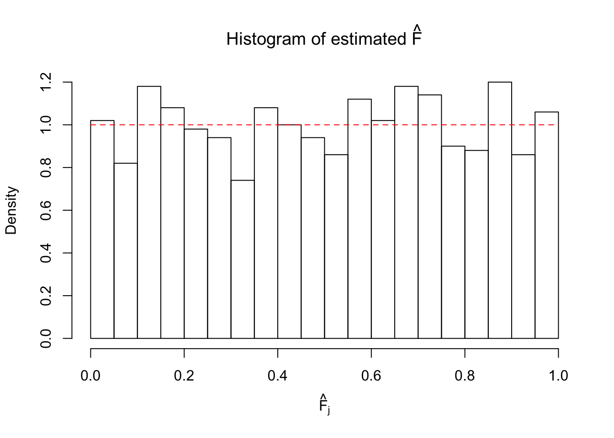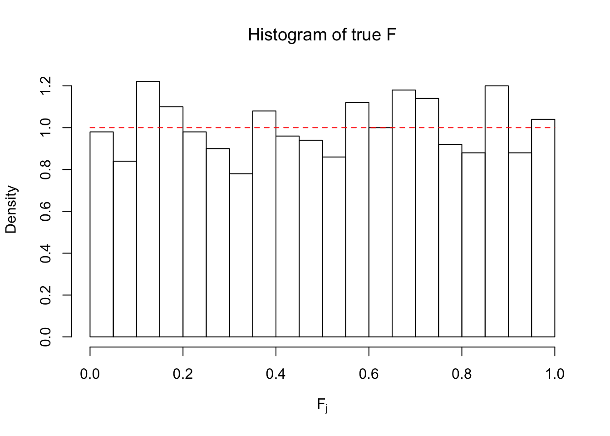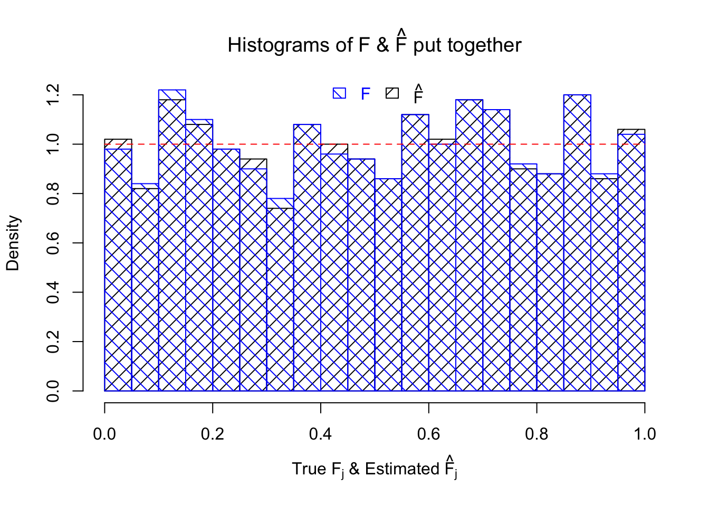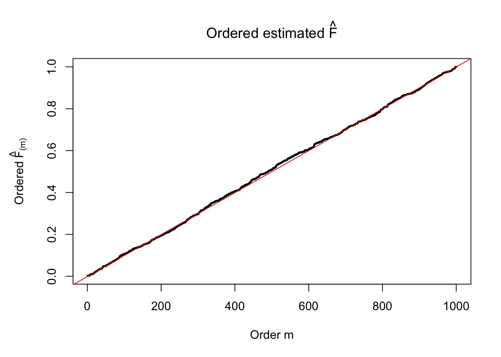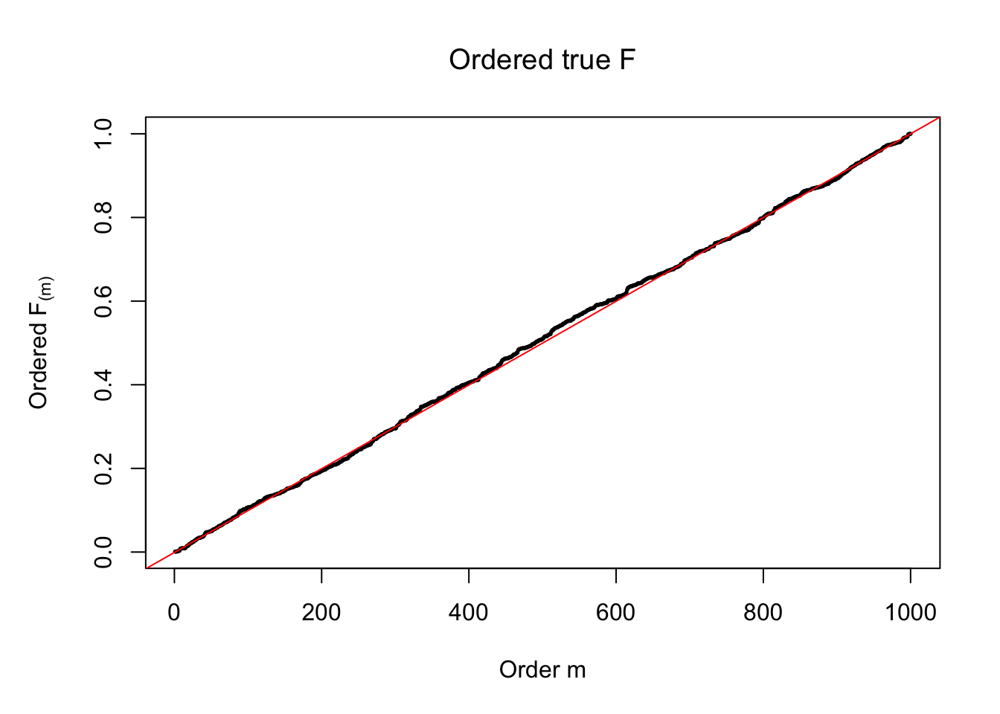
ASH: normal likelihood, uniform mixture prior
\(g = \sum_k\pi_kg_k\), where \(g_k\) is \(\text{Unif}\left[a_k, b_k\right]\). Let \(U_{a, b}\) be the probability density function (pdf) of \(\text{Unif}\left[a, b\right]\). An important fact regarding the integral of the cumulative distribution function of the standard normal \(\Phi\) is as follows,
\[ \int_{-\infty}^c\Phi(t)dt = c\Phi(c) +\varphi(c) \]
Therefore,
\[ \begin{array}{r} \displaystyle \begin{array}{r} p = \varphi_{\beta_j, \hat s_j^2}\\ g_k = U_{a_k, b_k} \end{array} \Rightarrow \displaystyle \int p\left(t\mid\beta_j,\hat s_j\right) g_k\left(\beta_j\right)d\beta_j = \frac{\Phi\left(\frac{t - a_k}{\hat s_j}\right) - \Phi\left(\frac{t - b_k}{\hat s_j}\right)}{b_k - a_k} \\ \displaystyle \Rightarrow \hat F_{jk} = \int_{-\infty}^{\hat\beta_j} \int p\left(t\mid\beta_j,\hat s_j\right) g_k(\beta_j)d\beta_j dt = \frac{1}{b_k - a_k}\left( \int_{-\infty}^{\hat\beta_j} \Phi\left(\frac{t - a_k}{\hat s_j}\right) dt - \int_{-\infty}^{\hat\beta_j} \Phi\left(\frac{t - b_k}{\hat s_j}\right) dt \right)\\ = \frac{\hat s_j}{b_k - a_k} \left( \left( \frac{\hat\beta_j - a_k}{\hat s_j}\Phi\left(\frac{\hat\beta_j - a_k}{\hat s_j}\right) +\varphi\left(\frac{\hat\beta_j - a_k}{\hat s_j}\right) \right) - \left( \frac{\hat\beta_j - b_k}{\hat s_j}\Phi\left(\frac{\hat\beta_j - b_k}{\hat s_j}\right) +\varphi\left(\frac{\hat\beta_j - b_k}{\hat s_j}\right) \right) \right) \\ \Rightarrow \hat F_j = \hat F_{\hat\beta_j|\hat s_j}\left(\hat\beta_j|\hat s_j\right) = \sum_k\hat\pi_k \hat F_{jk}\\ =\sum_k\hat\pi_k \left( \frac{\hat s_j}{b_k - a_k} \left( \left( \frac{\hat\beta_j - a_k}{\hat s_j}\Phi\left(\frac{\hat\beta_j - a_k}{\hat s_j}\right) +\varphi\left(\frac{\hat\beta_j - a_k}{\hat s_j}\right) \right) - \left( \frac{\hat\beta_j - b_k}{\hat s_j}\Phi\left(\frac{\hat\beta_j - b_k}{\hat s_j}\right) +\varphi\left(\frac{\hat\beta_j - b_k}{\hat s_j}\right) \right) \right) \right). \end{array} \] In particular, if \(a_k = b_k = \mu_k\), or in other words, \(g_k = \delta_{\mu_k}\),
\[ \begin{array}{rcl} \displaystyle \hat F_{jk} &=& \displaystyle \int_{-\infty}^{\hat\beta_j} \int p\left(t\mid\beta_j,\hat s_j\right) g_k(\beta_j)d\beta_j dt \\ &=& \displaystyle \int_{-\infty}^{\hat\beta_j} \int \varphi_{\beta_j, \hat s_j^2}(t) \delta_{\mu_k}\left(\beta_j\right)d\beta_jdt \\ &=& \displaystyle \int \Phi\left(\frac{\hat\beta_j - \beta_j}{\hat s_j}\right) \delta_{\mu_k}\left(\beta_j\right) d\beta_j \\ &=& \displaystyle \Phi\left(\frac{\hat\beta_j - \mu_k}{\hat s_j}\right). \end{array} \]
Note that, similar to the previous case, when fitting ASH,
\[ f_{jk} = \int p\left(\hat\beta_j\mid\beta_j,\hat s_j\right) g_k(\beta_j)d\beta_j = \begin{cases} \displaystyle\frac{\Phi\left(\frac{\hat\beta_j - a_k}{\hat s_j}\right) - \Phi\left(\frac{\hat\beta_j - b_k}{\hat s_j}\right)}{b_k - a_k} & a_k < b_k\\ \displaystyle\frac{1}{\hat s_j}\varphi\left(\frac{\hat\beta_j - \mu_k}{\hat s_j}\right) & a_k = b_k = \mu_k \end{cases}. \]
Therefore, both matrices of \(\left[\frac{\hat\beta_j - a_k}{\hat s_j}\right]_{jk}\) and \(\left[\frac{\hat\beta_j - b_k}{\hat s_j}\right]_{jk}\) should be created when fitting ASH. We can re-use them when calculating \(\hat F_{jk}\) and \(\hat F_{\hat\beta_j|\hat s_j}\left(\hat\beta_j|\hat s_j\right)\).
Illustrative Example
\(n = 1000\) observations \(\left\{\left(\hat\beta_1, \hat s_1\right), \ldots, \left(\hat\beta_n, \hat s_n\right)\right\}\) are generated as follows
\[ \begin{array}{rcl} \hat s_j &\equiv& 1 \\ \beta_j &\sim& 0.5\delta_0 + 0.5\text{Unif}\left[-1, 1\right]\\ \hat\beta_j | \beta_j, \hat s_j \equiv 1 &\sim& N\left(\beta_j, \hat s_j^2 \equiv1\right)\ . \end{array} \]
set.seed(100)
n = 1000
sebetahat = 1
beta = c(runif(n * 0.5, -1, 1), rep(0, n * 0.5))
betahat = rnorm(n, beta, sebetahat)First fit ASH to get \(\hat\pi_k\) and \(\hat g_k = \text{Unif}\left[\hat a_k, \hat b_k\right]\). Here we are using pointmass = TRUE and prior = "uniform" to impose a point mass but not penalize the non-point mass part, because the emphasis right now is to get an accurate estimate \(\hat g\).
fit.ash.n.u = ash.workhorse(betahat, sebetahat, mixcompdist = "uniform", pointmass = TRUE, prior = "uniform")
data = fit.ash.n.u$data
ghat = get_fitted_g(fit.ash.n.u)Then form the \(n \times K\) matrix of \(\hat F_{jk}\) and the \(n\)-vector \(\hat F_j\).
a_mat = outer(data$x, ghat$a, "-") / data$s
b_mat = outer(data$x, ghat$b, "-") / data$s
Fjkhat = ((a_mat * pnorm(a_mat) + dnorm(a_mat)) - (b_mat * pnorm(b_mat) + dnorm(b_mat))) / (a_mat - b_mat)
Fjkhat[a_mat == b_mat] = pnorm(a_mat[a_mat == b_mat])
Fhat = Fjkhat %*% ghat$piFor a fair comparison, oracle \(F_{jk}\) and \(F_j\) under true \(g\) are also calculated.
gtrue = unimix(pi = c(0.5, 0.5), a = c(0, -1), b = c(0, 1))
a_mat = outer(data$x, gtrue$a, "-") / data$s
b_mat = outer(data$x, gtrue$b, "-") / data$s
Fjktrue = ((a_mat * pnorm(a_mat) + dnorm(a_mat)) - (b_mat * pnorm(b_mat) + dnorm(b_mat))) / (a_mat - b_mat)
Fjktrue[a_mat == b_mat] = pnorm(a_mat[a_mat == b_mat])
Ftrue = Fjktrue %*% gtrue$piPlot the histogram of \(\left\{\hat F_j\right\}\) and ordered \(\left\{\hat F_{\left(j\right)}\right\} = \left\{\hat F_{(1)}, \ldots, \hat F_{(n)}\right\}\). Under goodness of fit, the histogram of \(\left\{\hat F_j\right\}\) should look like \(\text{Unif}\left[0, 1\right]\) and \(\left\{\hat F_{(j)}\right\}\) should look like a straight line from \(0\) to \(1\). Oracle \(\left\{F_j\right\}\) and \(\left\{F_{\left(j\right)}\right\}\) under true \(g\) are also plotted in the same way for comparison.
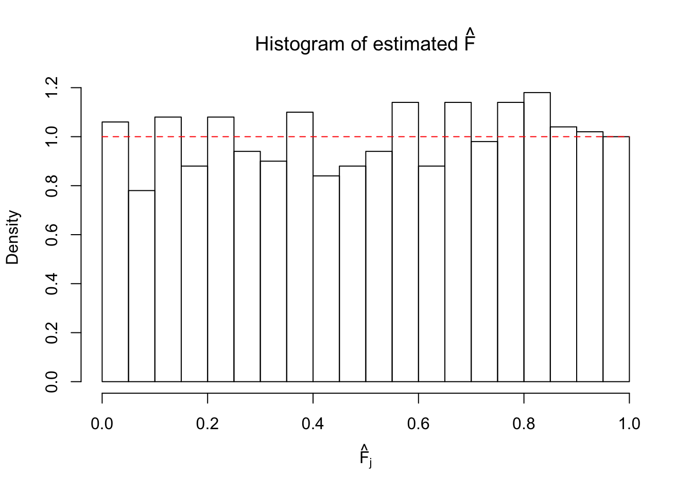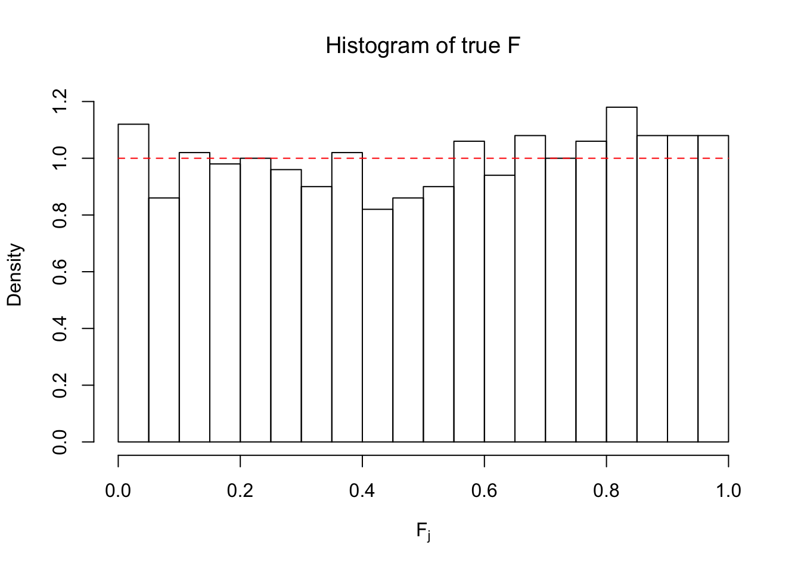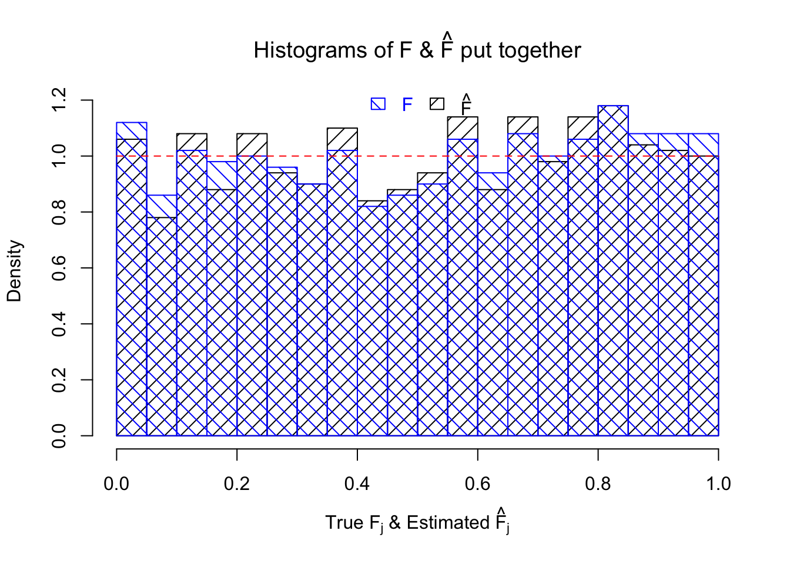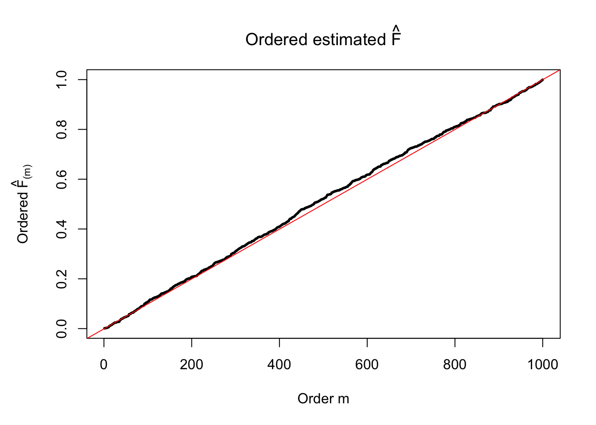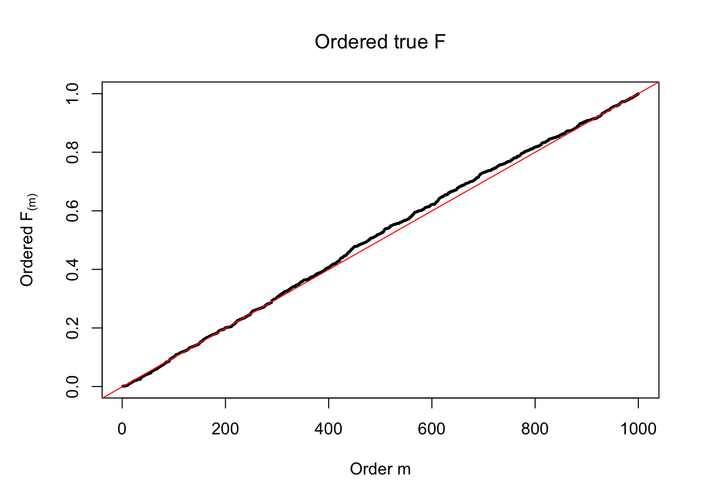
ASH: \(t\) likelihood, uniform mixture prior
In this case, \(\hat F_j = \hat F_{\hat\beta_j|\hat s_j}\left(\hat\beta_j|\hat s_j\right)\) involves calculting an integral of the cumulative distribution function (CDF) of Student’s \(t\) distribution, which does not have an analytical expression.
Let \(t_{\nu}\) and \(T_{\nu}\) denote the pdf and cdf of Student’s \(t\) distribution with \(\nu\) degrees of freedom. Current implementation when dealing with \(t\) likelihood assumes that
\[ \begin{array}{rl} \hat\beta_j | \beta_j, \hat s_j = \beta_j + \hat s_j t_j\\ t_j|\hat\nu_j \sim t_{\hat\nu_j}\\ \beta_j \sim g = \sum_k\pi_kg_k = \sum_k\pi_k\text{Unif}\left[a_k, b_k\right] & . \end{array} \] Therefore, the likelihood of \(\hat\beta_j = t\) given \(\beta_j, \hat s_j, \hat\nu_j\) should be
\[ p\left(\hat\beta_j = t | \beta_j, \hat s_j, \hat\nu_j\right) = \frac1{\hat s_j}t_{\hat\nu_j}\left(\frac{t - \beta_j}{\hat s_j}\right), \]
which gives
\[ \begin{array}{rcl} \hat F_{jk} &=& \displaystyle \int_{-\infty}^{\hat\beta_j} \int p\left(t\mid\beta_j,\hat s_j, \hat\nu_j\right) g_k\left(\beta_j\right)d\beta_j dt\\ &=& \displaystyle \int \left(\int_{-\infty}^{\hat\beta_j} \frac1{\hat s_j}t_{\hat\nu_j}\left(\frac{t - \beta_j}{\hat s_j}\right)dt\right) g_k\left(\beta_j\right)d\beta_j\\ &=& \displaystyle \int T_{\hat\nu_j}\left(\frac{\hat\beta_j - \beta_j}{\hat s_j}\right) g_k\left(\beta_j\right)d\beta_j\\ &=&\begin{cases} \displaystyle \frac{\hat s_j}{b_k - a_k} \int_{\frac{\hat\beta_j - b_k}{\hat s_j}}^{\frac{\hat\beta_j - a_k}{\hat s_j}} T_{\hat\nu_j}(t)dt & a_k < b_k\\ T_{\hat\nu_j}\left(\frac{\hat\beta_j - \mu_k}{\hat s_j}\right) & a_k = b_k = \mu_k \end{cases}. \end{array} \] Thus, in order to evaluate \(\hat F_{jk}\), we need to evaluate as many as \(n \times K\) integrals of the CDF of Student’s \(t\) distribution. The operation is not difficult to code but might be expensive to compute.
Illustrative Example
\(n = 1000\) observations \(\left\{\left(\hat\beta_1, \hat s_1\right), \ldots, \left(\hat\beta_n, \hat s_n\right)\right\}\) are generated as follows
\[ \begin{array}{rcl} \hat s_j &\equiv& 1 \\ \hat \nu_j &\equiv& 5 \\ t_j|\hat\nu_j \equiv5 &\sim& t_{\hat\nu_j\equiv5} \\ \beta_j &\sim& 0.5\delta_0 + 0.5\text{Unif}\left[-1, 1\right]\\ \hat\beta_j | \beta_j, \hat s_j \equiv 1, t_j &=& \beta_j + \hat s_jt_j \ . \end{array} \]
set.seed(100)
n = 1000
sebetahat = 1
nuhat = 5
t = rt(n, df = nuhat)
beta = c(runif(n * 0.5, -1, 1), rep(0, n * 0.5))
betahat = beta + sebetahat * tFirst fit ASH to get \(\hat\pi_k\) and \(\hat g_k = \text{Unif}\left[\hat a_k, \hat b_k\right]\). Here we are using pointmass = TRUE and prior = "uniform" to impose a point mass but not penalize the non-point mass part, because the emphasis right now is to get an accurate estimate \(\hat g\).
fit.ash.t.u = ash.workhorse(betahat, sebetahat, mixcompdist = "uniform", pointmass = TRUE, prior = "uniform", df = nuhat)
data = fit.ash.t.u$data
ghat = get_fitted_g(fit.ash.t.u)Then form the \(n \times K\) matrix of \(\hat F_{jk}\) and the \(n\)-vector \(\hat F_j\). As seen right now a for loop is used to calculate \(n \times K\) integration with \(n \times K\) different lower and upper integral bounds. There should be a better way to do this.
a_mat = outer(data$x, ghat$a, "-") / data$s
b_mat = outer(data$x, ghat$b, "-") / data$s
Fjkhat = matrix(nrow = nrow(a_mat), ncol = ncol(a_mat))
for (i in 1:nrow(a_mat)) {
for (j in 1:ncol(a_mat)) {
ind = (a_mat[i, j] == b_mat[i, j])
if (!ind) {
Fjkhat[i, j] = (integrate(pt, b_mat[i, j], a_mat[i, j], df = fit.ash.t.u$result$df[i])$value) / (a_mat[i, j] - b_mat[i, j])
} else {
Fjkhat[i, j] = pt(a_mat[i, j], df = fit.ash.t.u$result$df[i])
}
}
}
Fhat = Fjkhat %*% ghat$piFor a fair comparison, oracle \(F_{jk}\) and \(F_j\) under true \(g\) are also calculated.
gtrue = unimix(pi = c(0.5, 0.5), a = c(0, -1), b = c(0, 1))
a_mat = outer(data$x, gtrue$a, "-") / data$s
b_mat = outer(data$x, gtrue$b, "-") / data$s
Fjktrue = matrix(nrow = nrow(a_mat), ncol = ncol(a_mat))
for (i in 1:nrow(a_mat)) {
for (j in 1:ncol(a_mat)) {
ind = (a_mat[i, j] == b_mat[i, j])
if (!ind) {
Fjktrue[i, j] = (integrate(pt, b_mat[i, j], a_mat[i, j], df = fit.ash.t.u$result$df[i])$value) / (a_mat[i, j] - b_mat[i, j])
} else {
Fjktrue[i, j] = pt(a_mat[i, j], df = fit.ash.t.u$result$df[i])
}
}
}
Ftrue = Fjktrue %*% gtrue$piPlot the histogram of \(\left\{\hat F_j\right\}\) and ordered \(\left\{\hat F_{\left(j\right)}\right\} = \left\{\hat F_{(1)}, \ldots, \hat F_{(n)}\right\}\). Under goodness of fit, the histogram of \(\left\{\hat F_j\right\}\) should look like \(\text{Unif}\left[0, 1\right]\) and \(\left\{\hat F_{(j)}\right\}\) should look like a straight line from \(0\) to \(1\). Oracle \(\left\{F_j\right\}\) and \(\left\{F_{\left(j\right)}\right\}\) under true \(g\) are also plotted in the same way for comparison.
hist(Fhat, breaks = 20, xlab = expression(hat("F")[j]), prob = TRUE, main = expression(paste("Histogram of estimated ", hat("F"))))
segments(0, 1, 1, 1, col = "red", lty = 2)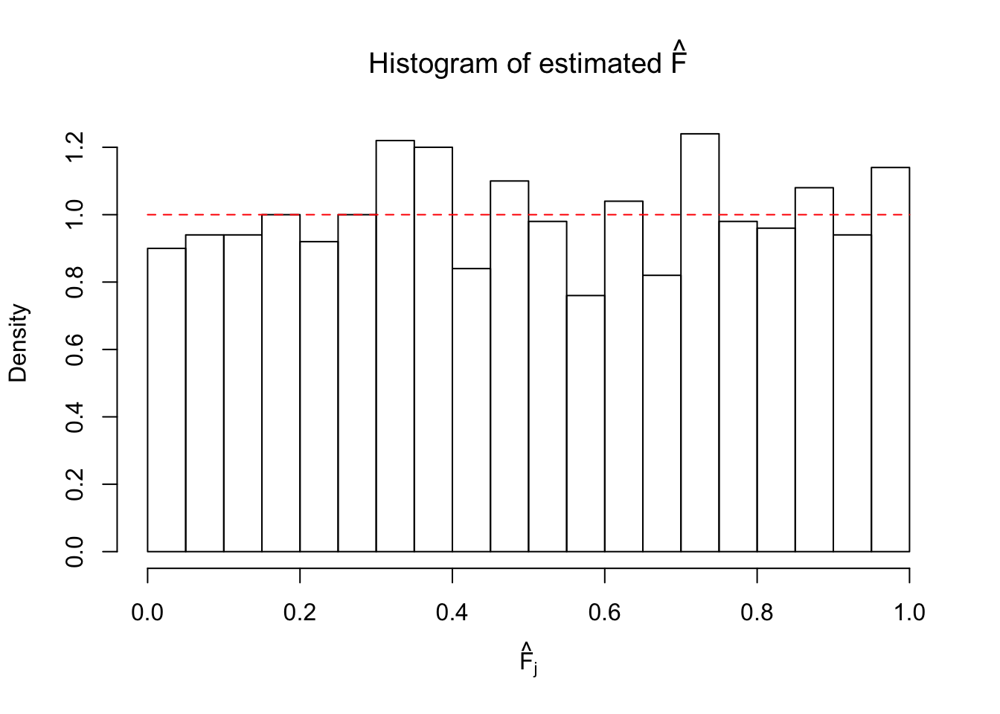
hist(Ftrue, breaks = 20, xlab = expression("F"[j]), prob = TRUE, main = expression("Histogram of true F"))
segments(0, 1, 1, 1, col = "red", lty = 2)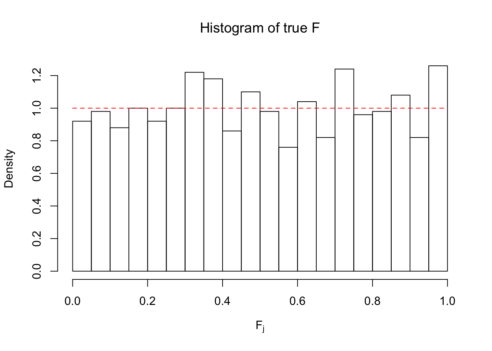
hist(Fhat, breaks = 20, prob = TRUE, xlab = expression(paste("True ", "F"[j], " & Estimated ", hat("F")[j])), main = expression(paste("Histograms of F & ", hat("F"), " put together")), density = 10, angle = 45)
hist(Ftrue, breaks = 20, prob = TRUE, add = TRUE, density = 10, angle = 135, border = "blue", col = "blue")
legend(x = 0.5, y = par('usr')[4], legend = c("F", expression(hat("F"))), density = 10, angle = c(135, 45), border = c("blue", "black"), ncol = 2, bty = "n", text.col = c("blue", "black"), yjust = 0.75, fill = c("blue", "black"), xjust = 0.5)
segments(0, 1, 1, 1, col = "red", lty = 2)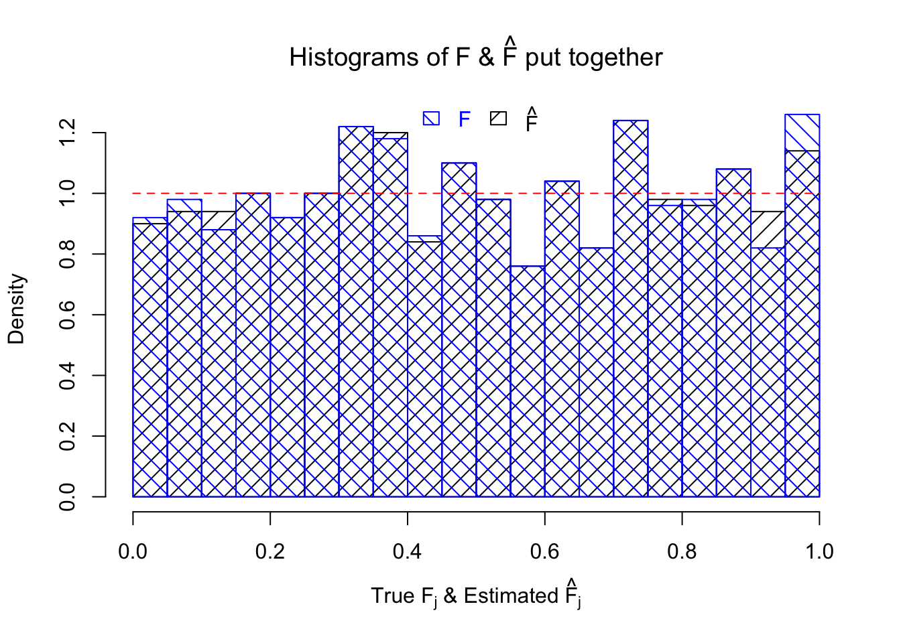
par(mar = c(5.1, 5.1, 4.1, 2.1))
plot(sort(Fhat), cex = 0.25, pch = 19, xlab = "Order m", ylab = expression(paste("Ordered ", hat("F")["(m)"])), main = expression(paste("Ordered estimated ", hat("F"))))
abline(-1/(n-1), 1/(n-1), col = "red")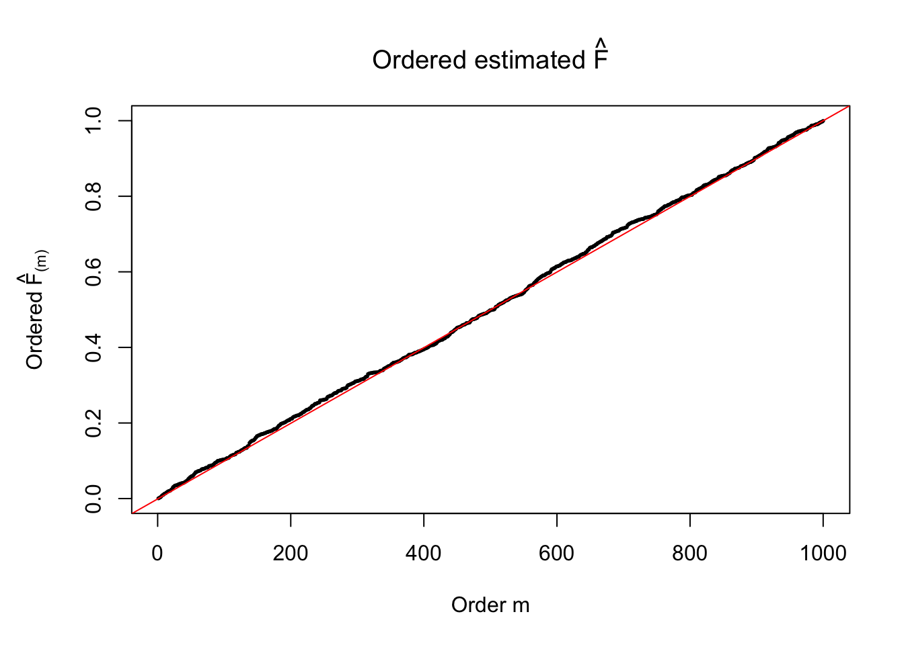
plot(sort(Ftrue), cex = 0.25, pch = 19, xlab = "Order m", ylab = expression(paste("Ordered ", "F"["(m)"])), main = expression(paste("Ordered true ", "F")))
abline(-1/(n-1), 1/(n-1), col = "red")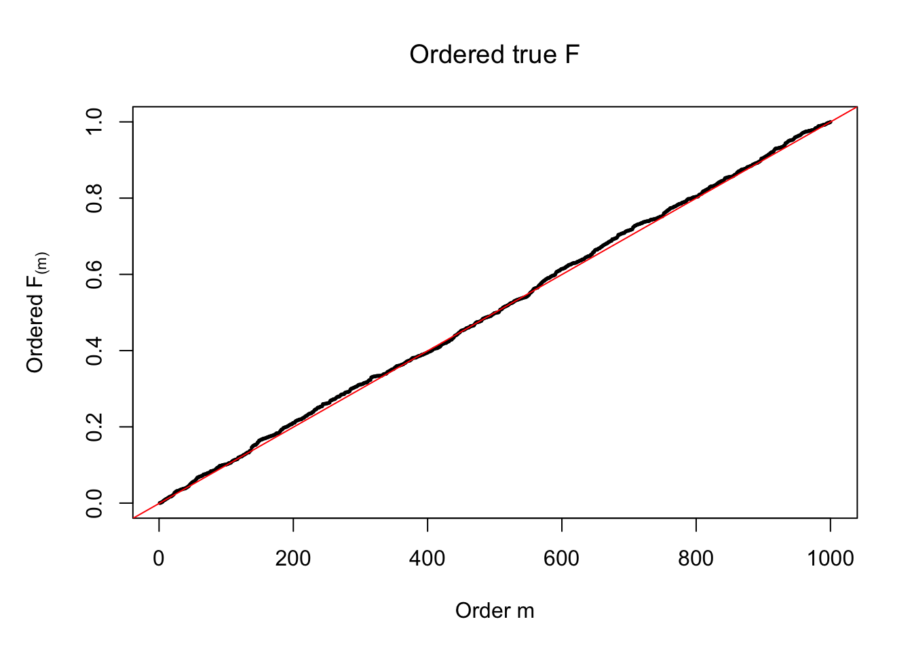
Exchangeability assumption
Now we are discussing several occasions when the diagnostic plots may show a conspicuous deviation from \(\text{Unif}\left[0, 1\right]\).
The above numerical illustrations show that when data are generated exactly as ASH’s assumptions, \(\hat F_{j}\) don’t deviate from \(\text{Unif}\left[0, 1\right]\) more so than \(F_{j}\) do when we know the true exchangeable prior \(g\). This result indicates that ASH does a good job estimating \(\hat g\).
However, how good is the exchangeability assumption for \(\beta_j\)? If individual \(g_j\left(\beta_j\right)\) are known, we can obtain the true \(F_{j}^o\) (“o” stands for “oracle”) as
\[ F_j^o = \int_{-\infty}^{\hat\beta_j}\int p\left(t\mid\beta_j, \hat s_j\right)g_j\left(\beta_j\right)d\beta_jdt \ . \] Then the difference in the “uniformness” between \(F_j\) and \(F_j^o\) indicates the goodness of the exchangeability assumption.
Here we are generating \(n = 10K\) observations according to
\[ \begin{array}{rcl} \hat s_j &\equiv& 1 \ ;\\ \beta_j &\sim& 0.5\delta_0 + 0.5N(0, 1)\ ;\\ \hat\beta_j | \beta_j, \hat s_j \equiv 1 &\sim& N\left(\beta_j, \hat s_j^2 \equiv1\right)\ . \end{array} \] The histograms of \(\left\{F_j^o\right\}\), \(\left\{F_j\right\}\), and \(\left\{\hat F_j\right\}\) are plotted together. In this example \(\left\{F_j^o\right\}\) are hardly more uniform than \(\left\{F_j\right\}\).
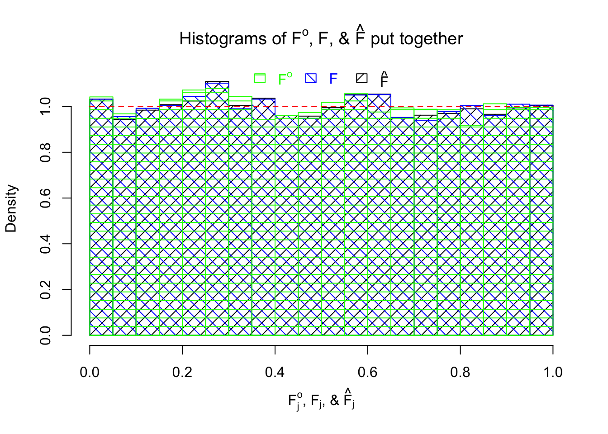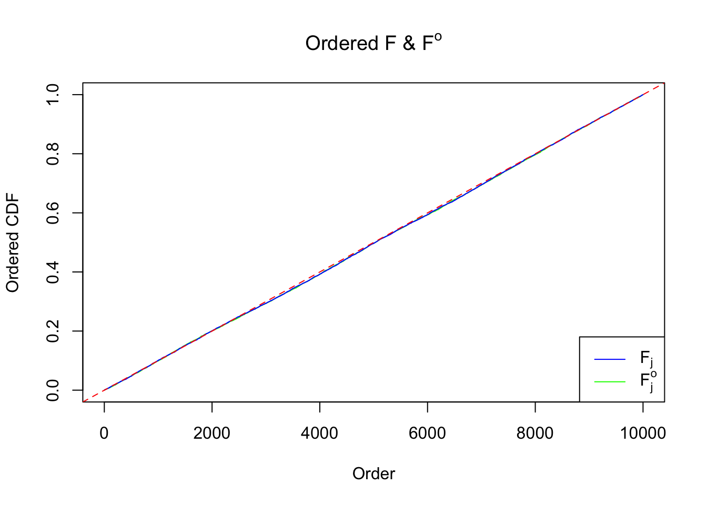
Unimodal assumption
The \(n = 1K\) observations are generated such that the unimodal assumption doesn’t hold.
\[ \begin{array}{rcl} \hat s_j &\equiv& 1 \ ;\\ \beta_j &\sim& 0.2\delta_0 + 0.4N(5, 1) + 0.4N(-5, 1)\ ;\\ \hat\beta_j | \beta_j, \hat s_j \equiv 1 &\sim& N\left(\beta_j, \hat s_j^2 \equiv1\right)\ . \end{array} \] The histograms of \(\left\{F_j\right\}\), and \(\left\{\hat F_j\right\}\) are plotted together, as well as the ordered \(\left\{F_{(j)}\right\}\) and \(\left\{\hat F_{(j)}\right\}\). \(\left\{\hat F_j\right\}\) being conspicuously not uniform provides evidence for lack of goodness of fit.
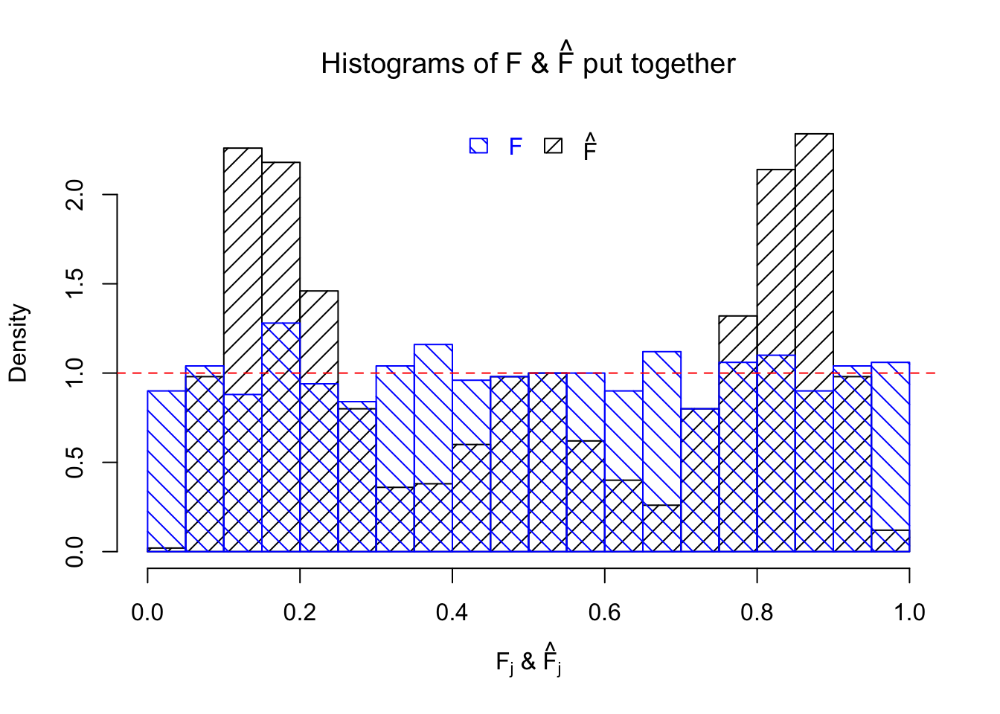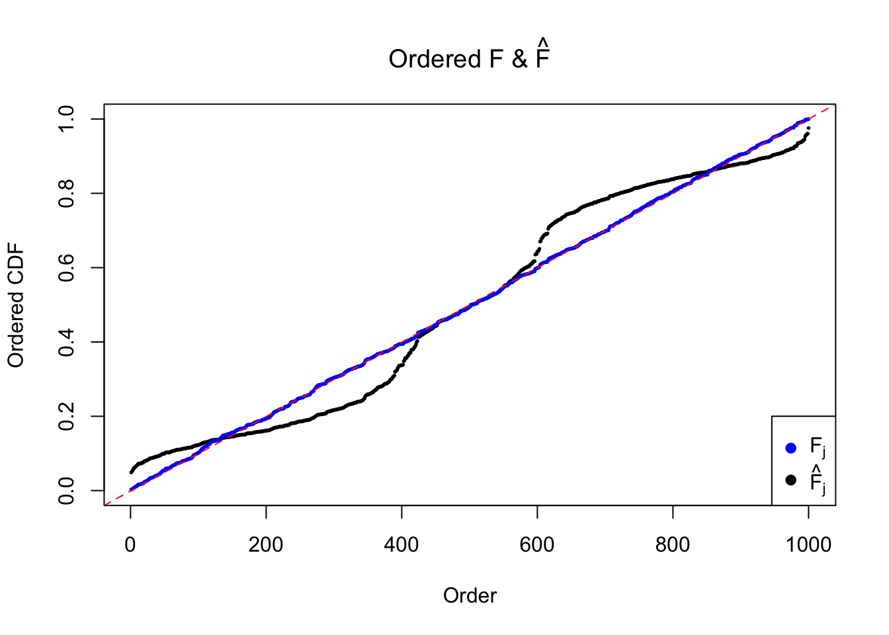
Mixture misspecification
Even if the effect size prior \(g\) is unimodal, because ASH implicitly makes the assumption that \(g\) is sufficiently regular such that it can be approximated by a limited number of normals or uniforms, ASH can fail when the mixture components are not able to capture the true effect size distribution.
In this example, the \(n = 1K\) observations are generated, such that the true effect size distribution \(g\) is uniform and thus can not be satisfactorily approximated by a mixture of normal. We’ll see what happens when the normal mixture prior is still used.
\[ \begin{array}{rcl} \hat s_j &\equiv& 1 \ ;\\ \beta_j &\sim& \text{Unif}\left[-10, 10\right]\ ;\\ \hat\beta_j | \beta_j, \hat s_j \equiv 1 &\sim& N\left(\beta_j, \hat s_j^2 \equiv1\right)\ . \end{array} \]
Let \(\hat F_{j}^n\) be the estimated \(\hat F_{\hat\beta_j|\hat s_j}\left(\hat\beta_j \mid \hat s_j\right)\) by ASH using normal mixtures (mixcompdist = "normal"), and \(\hat F_{j}^u\) be that using uniform mixtures (mixcompdist = "uniform"). Both are plotted below, compared with \(F_{j}\) using true exchangeable prior \(g = \text{Unif}\left[-10, 10\right]\).
It can be seen that ASH using normal mixtures is not able to estimate \(g\) well and thus is not producing \(\text{Unif}\left[0, 1\right]\) \(\left\{\hat F_j\right\}\). ASH using uniform mixtures, on the contrary, is doing fine.
 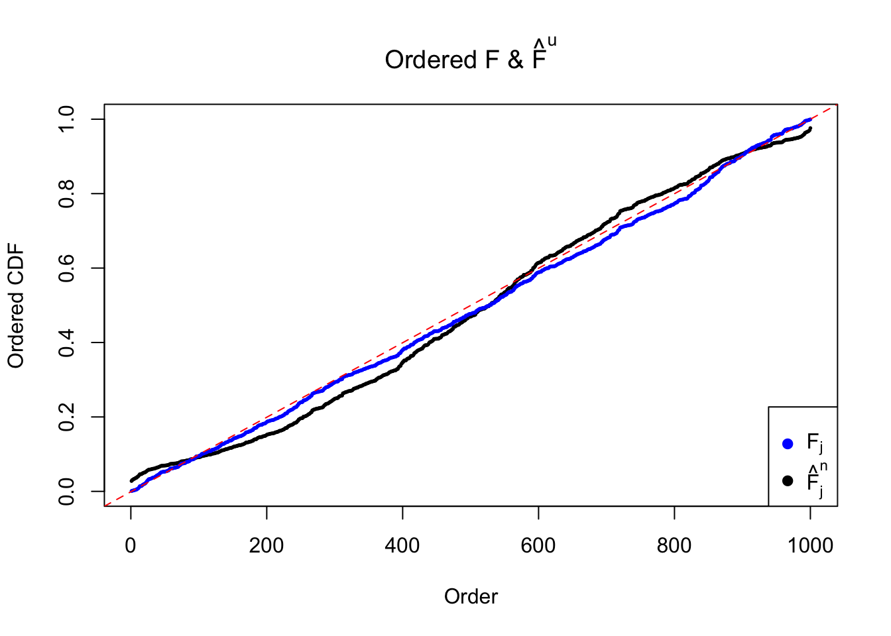
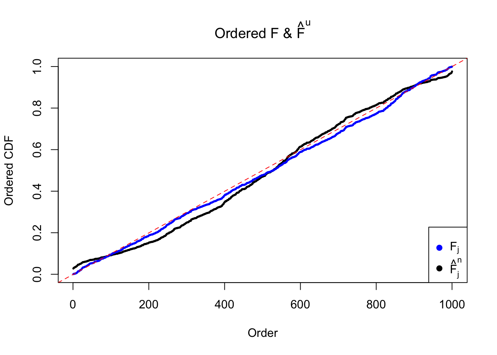 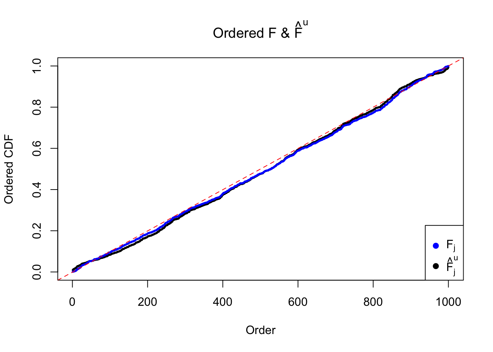
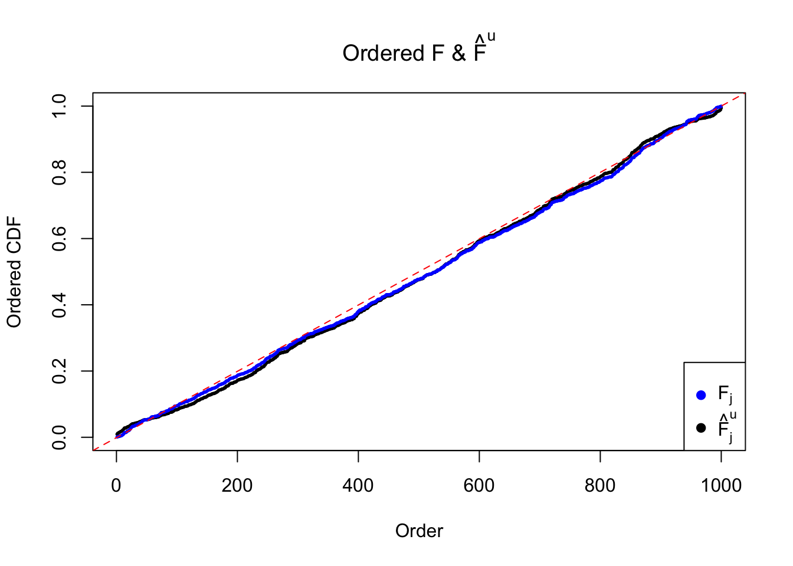
Session information
sessionInfo()R version 3.4.1 (2017-06-30)
Platform: x86_64-apple-darwin15.6.0 (64-bit)
Running under: macOS Sierra 10.12.6
Matrix products: default
BLAS: /Library/Frameworks/R.framework/Versions/3.4/Resources/lib/libRblas.0.dylib
LAPACK: /Library/Frameworks/R.framework/Versions/3.4/Resources/lib/libRlapack.dylib
locale:
[1] en_US.UTF-8/en_US.UTF-8/en_US.UTF-8/C/en_US.UTF-8/en_US.UTF-8
attached base packages:
[1] stats graphics grDevices utils datasets methods base
other attached packages:
[1] ashr_2.1-27
loaded via a namespace (and not attached):
[1] Rcpp_0.12.12 knitr_1.16 magrittr_1.5
[4] MASS_7.3-47 doParallel_1.0.10 pscl_1.5.1
[7] SQUAREM_2016.8-2 lattice_0.20-35 foreach_1.4.3
[10] stringr_1.2.0 tools_3.4.1 parallel_3.4.1
[13] grid_3.4.1 git2r_0.19.0 htmltools_0.3.6
[16] iterators_1.0.8 yaml_2.1.14 rprojroot_1.2
[19] digest_0.6.12 Matrix_1.2-10 codetools_0.2-15
[22] evaluate_0.10.1 rmarkdown_1.6 stringi_1.1.5
[25] compiler_3.4.1 backports_1.1.0 truncnorm_1.0-7 This R Markdown site was created with workflowr